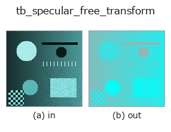

typed op• データ種: rgbimage → rgbimage
• 呼び出し: fullseye.apply(img, "tb_specular_free_transform", a=0.5, b=0.5) (2-D は 1 画像 + 2 スカラつまみ a,b∈[0,1] のモデル)

*図は合成の入力 128×128 で実際に走らせた出力。左が入力、右が出力。点群は上から見た散布(明るさ = z)、1-D 列は折れ線、体積は z 方向の最大値投影、動画は中央フレーム、複素画像は振幅、絵にならない返り値は値そのもの。*
*つまみ a は出力を変えない(実測: 0.1 / 0.5 / 0.9 で同一)。*
*つまみ b は出力を変えない(実測: 0.1 / 0.5 / 0.9 で同一)。*
段階(前置きの op → この op。左から順):
▸ tb_specular_free_transform: stages (docs site)
別の画像でも(合成シーン / 写真 / 硬貨。上段が入力、下段がその出力。つまみは既定):
▸ tb_specular_free_transform: other inputs (docs site)
照明方向の成分を画像から射影除去する: ハイライトが決して触れない部分を取り出す。→ (H, W, 3)。
> 以下の詳細説明は原文のままです —— 要約と見出しは訳出済み。
`I - (I.G) G for the unit illuminant colour G`. Under the dichromatic
model the interface term is `m_s * G`, so it lies entirely in the removed
direction and the result is invariant to any specular term whatsoever —
exactly, for any lobe shape, any strength, any spatial pattern. That is the
specular-invariant subspace of Mallick et al. (2005); this operator is the
projection itself, with no rotation into named channels, so it stays in RGB
and composes with the rest of the family.
Use it when the *shape* of the specular lobe is unknown or the surface is
textured — feature matching, edge detection and correlation all work in this
subspace without any of the assumptions
:func:specular_diffuse_split needs.
This is a projection, not a picture. The result loses one of three
degrees of freedom (its component along `G` is exactly zero everywhere)
and, for an image with negative values after black-level subtraction, keeps
them. It is not a displayable "highlight-removed photo" and does not claim
to be; for that, use :func:specular_diffuse_split.
Raises `ValueError: *image_rgb* is not a valid (H, W, 3)` linear
RGB image (see :func:specular_diffuse_split); *illuminant_rgb* is not a
non-zero 3-vector.
Typed bridge of the specular op `specular_free_transform into the 2-D evolution registry: the same implementation, called under the op(v, a, b) convention. This op has no tunable parameter; a and b` are unused.
• サンプルデータ カタログ(DL URL / ライセンス) — 2-D は skimage.data(BSD/public)+ 合成、3-D は実データ源(Stanford/PDS 等)の DL URL。
• 演算子の来歴・参考文献 — この op 族の元になった研究/手法の出典。
下のプログラムは実際に走ることを確かめてある(図と同じ入力)。Studio のヘルプではこのブロックがボタンになり、その場で読み込んで実行できる。
img_to_rgb 0.50 0.50 tb_specular_free_transform 0.50 0.50
▸ Load this pipeline · Load & run
次の例は元の台帳 op specular_free_transform を呼ぶもの。この橋渡し op は同じ実装を fn(v, a, b) 規約に合わせただけなので、挙動はそのまま当てはまる(呼び出し形だけ違う)。
• poc_leaf_disease_area — py -3.11 examples/poc_leaf_disease_area.py
• specular_photometric — py -3.11 examples/specular_photometric.py
rgbimage を入力に取れる)identity · tb_wetness · tb_sensor_capture · tb_specular_diffuse_split · tb_specular_coefficient_map · tb_rgb_to_quaternion
typed)tb_points_to_voxel · tb_estimate_point_normals · tb_iss_keypoints · tb_project_points · tb_render_point_depth · tb_statistical_outlier_removal · tb_radius_outlier_removal · tb_voxel_grid_downsample
*Provenance: ops.py — 2D operator registry. この per-op ノートは tools/opdocs.py md が自動生成(手編集しない)。*
© 2026 Kazufumi Furuse — Fullseye operator documentation. Licensed under Apache-2.0.
{kind=link}
{kind=link}